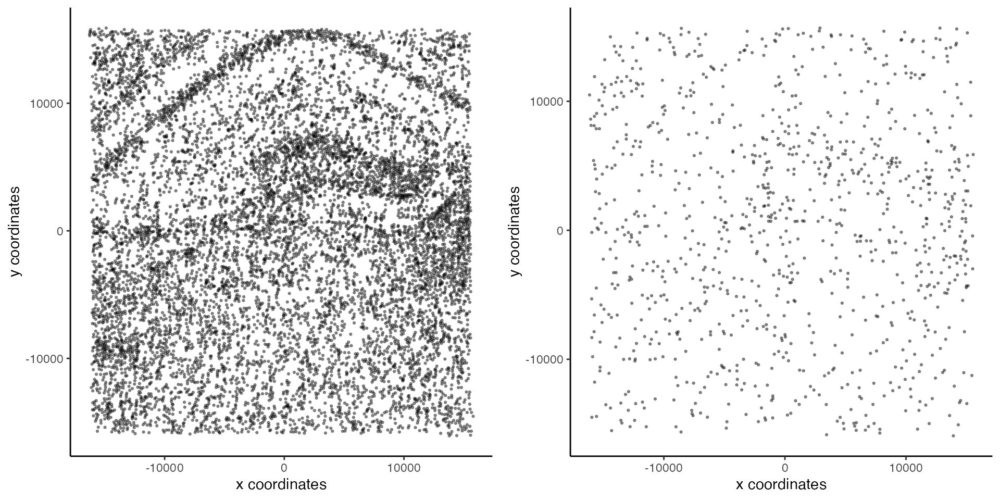
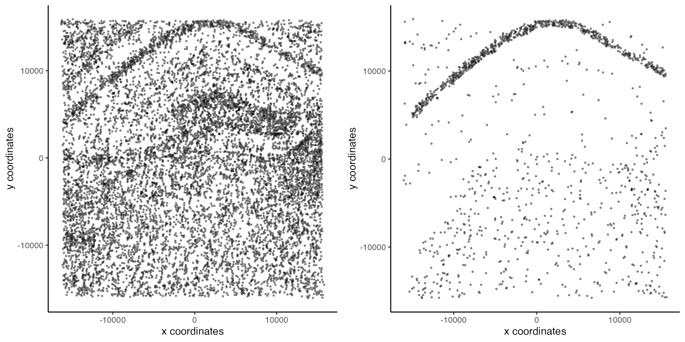

This article describes the BanksyObject class in detail and how to interact with it.
We use data attached with the package:
We store the total counts and the number of expressed genes for each cell:
total_count <- colSums(expr)
num_genes <- colSums(expr > 0)
meta <- data.frame(total_count = total_count, num_genes = num_genes)The BanksyObject can be constructed by supplying the gene-cell expression matrix and cell locations. Optionally, metadata can be provided. Calling BanksyObject populates metadata and performs gene filtering in the case of multiple datasets. This should be the default method of construction - avoid setter methods for construction.
bank <- BanksyObject(own.expr = expr, cell.locs = locs, meta.data = meta)
# Filter cells based on total count
bank <- SubsetBanksy(bank, metadata = total_count > quantile(total_count, 0.05) &
total_count < quantile(total_count, 0.98))
bank
#> Object of class BanksyObject
#> Assay with 10205 cells 120 features
#> Spatial dimensions: sdimx sdimy
#> Metadata names: cell_ID nCount NODG
#> Dimension reductions:The filtered dataset consists of 10,205 cells and 129 genes in 2 spatial dimensions.
BanksyObject has the following slots:
slotNames(bank)
#> [1] "own.expr" "nbr.expr" "harmonics" "custom.expr" "cell.locs"
#> [6] "meta.data" "reduction"own.expr stores the gene by cell expression
matrixnbr.expr stores the averaged neighborhood expression
matrixharmonics stores higher neighborhood harmonics
matricescustom.expr is an auxillary slot for storing a custom
expression matrixcell.locs stores the cell locationsmeta.data stores cell metadata, such as cluster labels
or colours for visualisationreduction stores dimension reductionsGetter and setter methods are defined for each of these slots.
Calling ComputeBanksy computes the neighbour feature-cell
expression matrix, populating the nbr.expr slot:
bank <- NormalizeBanksy(bank)
bank <- ComputeBanksy(bank, verbose=FALSE)
bank <- ScaleBanksy(bank)Dimensionality reduction with RunBanksyPCA or
RunBanksyUMAP populates the reduction slot:
bank <- RunBanksyPCA(bank, lambda = 0.2)
names(reduction(bank))
#> [1] "pca_M0_lam0.2"Perform clustering with ClusterBanksy. This populates the
meta.data slot with cluster labels.
set.seed(42)
bank <- ClusterBanksy(bank, lambda = 0.2, pca = TRUE, npcs = 20,
method = 'leiden', resolution = 1.2, k.neighbors = 50)
head(meta.data(bank))
#> cell_ID nCount NODG clust_M0_lam0.2_k50_res1.2
#> cell_1276 cell_1276 266 51 17
#> cell_691 cell_691 132 36 6
#> cell_396 cell_396 95 27 17
#> cell_68 cell_68 579 72 17
#> cell_6954 cell_6954 116 29 7
#> cell_7074 cell_7074 28 17 7SubsetBanksy allows users to subset a BanksyObject
by dimension, genes, cells, and metadata columns. The
BanksyObject can be subset by dimensions with logical unquoted
conditions. The variables here (e.g. sdimx) must correspond
to the columns names of the cell.locs(bank).
bankDim <- SubsetBanksy(bank, dims = (sdimx < -4000 | sdimx > 10000) |
(sdimy < 3000 | sdimy > 10000))
gridExtra::grid.arrange(
plotSpatial(bank, pt.alpha = 0.4),
plotSpatial(bankDim, pt.alpha = 0.4),
ncol = 2
)The object can also be subset by cells:
sample_cells <- sample(meta.data(bank)$cell_ID, 1000)
bankCells <- SubsetBanksy(bank, cells = sample_cells)
gridExtra::grid.arrange(
plotSpatial(bank, pt.alpha = 0.4),
plotSpatial(bankCells, pt.alpha = 0.4),
ncol = 2
)
Similarly, the object can also be subset by any metadata column with
logical unquoted conditions. Here, we select cells in in certain
clusters based on the clustering with lam=0.3,
k=50, res=1.2.
select_clusters <- c(6,7)
bankMeta <- SubsetBanksy(bank, metadata = clust_M0_lam0.2_k50_res1.2 %in% select_clusters)
gridExtra::grid.arrange(
plotSpatial(bank, pt.alpha = 0.4),
plotSpatial(bankMeta, pt.alpha = 0.4),
ncol = 2
)
Subsetting by genes can be achieved by supplying a character vector
of genes to the features argument:
genes <- sample(rownames(own.expr(bank)), 10)
bankFeatures <- SubsetBanksy(bank, features = genes)If multiple subsetting features are supplied, the intersection of all conditions will be returned.
sessionInfo()
#> R version 4.3.2 (2023-10-31)
#> Platform: aarch64-apple-darwin20 (64-bit)
#> Running under: macOS Sonoma 14.2.1
#>
#> Matrix products: default
#> BLAS: /Library/Frameworks/R.framework/Versions/4.3-arm64/Resources/lib/libRblas.0.dylib
#> LAPACK: /Library/Frameworks/R.framework/Versions/4.3-arm64/Resources/lib/libRlapack.dylib; LAPACK version 3.11.0
#>
#> locale:
#> [1] en_US.UTF-8/en_US.UTF-8/en_US.UTF-8/C/en_US.UTF-8/en_US.UTF-8
#>
#> time zone: Europe/London
#> tzcode source: internal
#>
#> attached base packages:
#> [1] stats graphics grDevices utils datasets methods base
#>
#> other attached packages:
#> [1] Banksy_0.1.5
#>
#> loaded via a namespace (and not attached):
#> [1] bitops_1.0-7 gridExtra_2.3
#> [3] rlang_1.1.3 magrittr_2.0.3
#> [5] clue_0.3-65 GetoptLong_1.0.5
#> [7] matrixStats_1.2.0 compiler_4.3.2
#> [9] sccore_1.0.4 png_0.1-8
#> [11] systemfonts_1.0.5 vctrs_0.6.5
#> [13] maps_3.4.2 ggalluvial_0.12.5
#> [15] stringr_1.5.1 pkgconfig_2.0.3
#> [17] shape_1.4.6 crayon_1.5.2
#> [19] fastmap_1.1.1 XVector_0.42.0
#> [21] labeling_0.4.3 utf8_1.2.4
#> [23] rmarkdown_2.25 ragg_1.2.7
#> [25] purrr_1.0.2 xfun_0.42
#> [27] zlibbioc_1.48.0 cachem_1.0.8
#> [29] pals_1.8 GenomeInfoDb_1.38.6
#> [31] jsonlite_1.8.8 progress_1.2.3
#> [33] highr_0.10 DelayedArray_0.28.0
#> [35] prettyunits_1.2.0 irlba_2.3.5.1
#> [37] parallel_4.3.2 cluster_2.1.6
#> [39] R6_2.5.1 bslib_0.6.1
#> [41] stringi_1.8.3 RColorBrewer_1.1-3
#> [43] leidenAlg_1.1.2 GenomicRanges_1.54.1
#> [45] jquerylib_0.1.4 Rcpp_1.0.12
#> [47] SummarizedExperiment_1.32.0 iterators_1.0.14
#> [49] knitr_1.45 IRanges_2.36.0
#> [51] Matrix_1.6-5 igraph_2.0.1.1
#> [53] tidyselect_1.2.0 rstudioapi_0.15.0
#> [55] dichromat_2.0-0.1 abind_1.4-5
#> [57] yaml_2.3.8 doParallel_1.0.17
#> [59] codetools_0.2-19 lattice_0.22-5
#> [61] tibble_3.2.1 plyr_1.8.9
#> [63] withr_3.0.0 Biobase_2.62.0
#> [65] evaluate_0.23 desc_1.4.3
#> [67] circlize_0.4.15 mclust_6.0.1
#> [69] pillar_1.9.0 MatrixGenerics_1.14.0
#> [71] foreach_1.5.2 stats4_4.3.2
#> [73] generics_0.1.3 dbscan_1.1-12
#> [75] RCurl_1.98-1.14 S4Vectors_0.40.2
#> [77] hms_1.1.3 ggplot2_3.4.4
#> [79] munsell_0.5.0 scales_1.3.0
#> [81] glue_1.7.0 mapproj_1.2.11
#> [83] tools_4.3.2 data.table_1.15.0
#> [85] fs_1.6.3 grid_4.3.2
#> [87] colorspace_2.1-0 GenomeInfoDbData_1.2.11
#> [89] RcppHungarian_0.3 cli_3.6.2
#> [91] textshaping_0.3.7 fansi_1.0.6
#> [93] S4Arrays_1.2.0 ComplexHeatmap_2.18.0
#> [95] dplyr_1.1.4 uwot_0.1.16
#> [97] gtable_0.3.4 sass_0.4.8
#> [99] digest_0.6.34 BiocGenerics_0.48.1
#> [101] SparseArray_1.2.4 farver_2.1.1
#> [103] rjson_0.2.21 memoise_2.0.1
#> [105] htmltools_0.5.7 pkgdown_2.0.7
#> [107] lifecycle_1.0.4 GlobalOptions_0.1.2